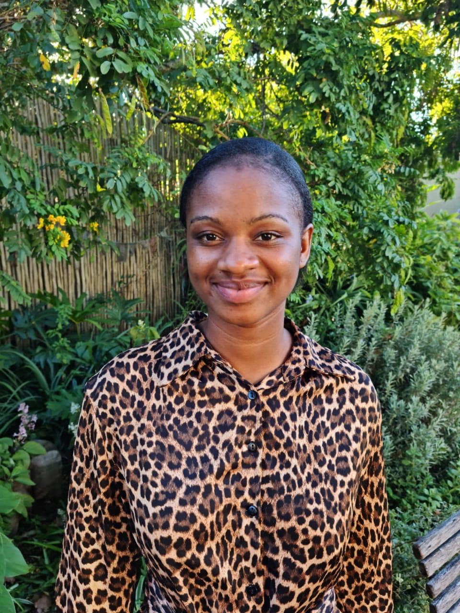

Biography
Name: Sheron Tanyanyiwa
Date Of Birth: 13/11/2003
Location: South Africa
Occupation: Dental Assistant
Interests: Technology, Programming, Web Development
Skills(beginner level): HTML, CSS, JavaScript, C++, Python
Hobbies: Reading, Learning, Exploring New Technologies
Languages: English, Shona
Personality: Curious, Eager to Learn, Problem Solver
Education
BSc in Computer Science, University of South Africa (UNISA)
Ongoing — Currently in 2nd year
About Me
Contact
Email: sherolroses05@gmail.com
Phone Number: 0723788960